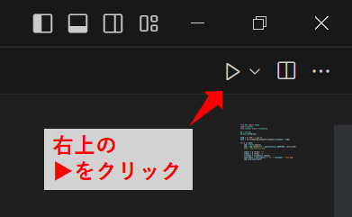
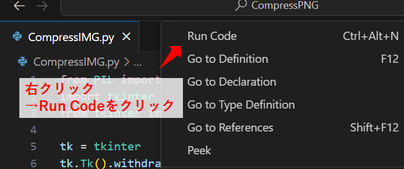
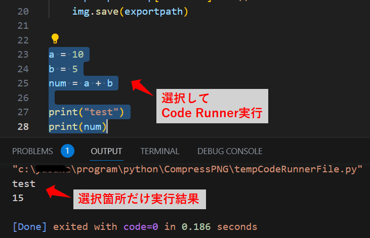
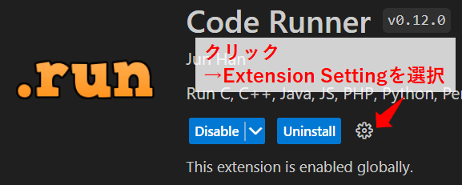

2023/05/26
VSCodeの拡張機能「Code Runner」を使う
「Code Runner」は、プログラムをお手軽に実行できる拡張機能です。
- ワンクリックでプログラムを実行できます。
- 選択箇所だけの部分実行が可能です。
- 対応しているプログラム言語が豊富で、ほぼ全ての言語で実行できます。
Code Runner - Visual Studio Marketplace
Extension for Visual Studio Code - Run C, C++, Java, JS, PHP, Python, Perl, Ruby, Go, Lua, Groovy, PowerShell, CMD, BASH, F#, C#, VBScript, TypeScript, CoffeeScript, Scala, Swift, Julia, Crystal, OCaml, R, AppleScript, Elixir, VB.NET, Clojure, Haxe, Obj-C, Rust, Racket, Scheme, AutoHotkey, AutoIt, Kotlin, Dart, Pascal, Haskell, Nim,
使い方
プログラムの実行方法は何通りかあります。
- CTRL + ALT + N を押す。
- 右上の▶ボタンをクリックする。
- 右クリック → Run Codeを選択。


何も選択していなければ全体を実行、選択していれば選択箇所のみ実行されます。
下の画像は選択箇所のみ実行したときのものです。

設定
設定しておいた方が良い項目をまとめておきます。
設定はVSCode上の拡張機能の画面からできます。

code-runner.executorMap
各言語の実行コマンドを設定できます。
pythonを使用する場合、デフォルトでは仮想環境での実行に対応していないので、pythonの項目を下記のようにします。
"code-runner.executorMap":
{
"python" : "$pythonPath -u $fullFileName"
},
- $pythonPath：
pythonのパスです。 - $fullFileName：
現在開いているファイル名です。
code-runner.runInTerminal
プログラムをターミナルで実行するかどうかを設定します。
デフォルトではfalse（ターミナル未使用）になっています。
標準入力など使用する場合はターミナルの方が都合がよいので、trueにしておきます。
"code-runner.runInTerminal": true
以上です。